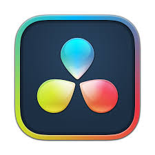
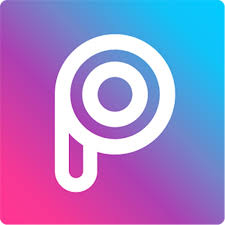
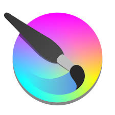
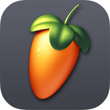

Teknik Yetenekler & Araçlar
Bilgisayar Mühendisliği ve tasarım süreçlerinde kullandığım araç gereçler.
| Kullandığım Program | Kullanma Düzeyi | Kullanma Amacı |
|---|---|---|
| Birincil | 2D Mobil Platformer oyun geliştirme ve mekanik kodlama. | |
| Birincil | C# projelerinde ana kod editörü olarak kullanım. | |
 DaVinci Resolve |
Yan | Video düzenleme ve render için birincil programım. |
 PicsArt & PPT |
Yan | Hızlı fotomontajlar için mobil edit programım. |
 Krita |
Gelişme Aşamasında | İleride oyunlarımda kullanmak için çizmeyi öğreniyorum. |
 FL Studio |
Gelişme Aşamasında | Yine ses efektleri ve müzik yapmak için bu programı öğreniyorum. |